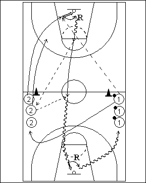

Catégorie : FASTBREAK (Fb-004)
Déroulement
- Deux files à hauteur de la ligne médiane. Les joueurs de la file 1 ont un ballon.
- Le premier joueur de la file 2 démarre et reçoit le ballon du premier joueur de la file 1 pour la réalisation du lay-up. Le shooteur effectue son rebond et un dribble, puis passe au deuxième joueur (nouveau premier joueur) de la file 2, qui lui remet alors le ballon. Dès réception, le joueur 2 doit aller en un minimum de dribbles effectuer le lay-up au panneau opposé (dribble de contre-attaque).
- 1 va dans la file 2. 2 réalise son deuxième rebond et va dans la file 1. Le deuxième joueur de la file 2 démarre à son tour dès qu’il a effectué la passe retour au premier 2.
Coaching points
- Pour accélérer le rythme, et surtout en fonction du nombre de joueurs, on peut demander aux deux premiers joueurs de la file 2 de partir pour débuter le drill.
- Insister sur la réussite des deux lay-ups (trop de ratés en match en situation de 1 contre 0 !).
- Par la suite, on peut demander à 1 de jouer en défense avant de rejoindre sa nouvelle file. On ne privilégie donc plus la situation de contre-attaque mais plutôt le 1 contre 1.